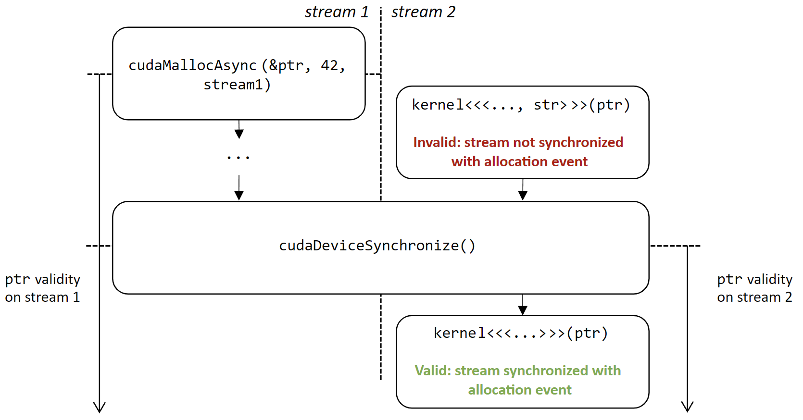
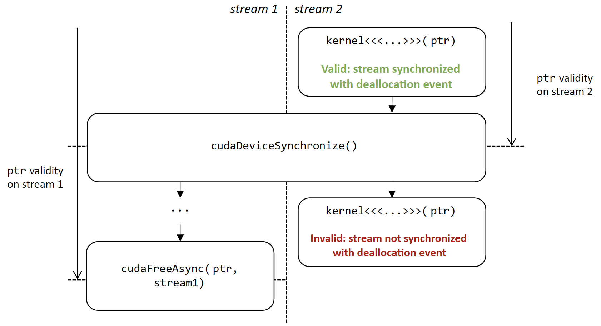

1. Introduction
1.1. About Compute Sanitizer
Compute Sanitizer is a functional correctness checking suite included in the CUDA toolkit. This suite contains multiple tools that can perform different type of checks. The memcheck tool is capable of precisely detecting and attributing out of bounds and misaligned memory access errors in CUDA applications. The tool can also report hardware exceptions encountered by the GPU. The racecheck tool can report shared memory data access hazards that can cause data races. The initcheck tool can report cases where the GPU performs uninitialized accesses to global memory. The synccheck tool can report cases where the application is attempting invalid usages of synchronization primitives. This document describes the usage of these tools.
1.2. Why Compute Sanitizer
NVIDIA allows developers to easily harness the power of GPUs to solve problems in parallel using CUDA. CUDA applications often run thousands of threads in parallel. Every programmer invariably encounters memory access errors and thread ordering, hazards that are hard to detect and time consuming to debug. The number of such errors increases substantially when dealing with thousands of threads. The Compute Sanitizer suite is designed to detect those problems in your CUDA application.
1.4. Compute Sanitizer Tools
- Memcheck – The memory access error and leak detection tool. See Memcheck Tool
- Racecheck – The shared memory data access hazard detection tool. See Racecheck Tool
- Initcheck – The uninitialized device global memory access detection tool. See Initcheck Tool
- Synccheck – The thread synchronization hazard detection tool. See Synccheck Tool
2. Compute Sanitizer
compute-sanitizer [options] app_name [app_options]
For a full list of options that can be specified to compute-sanitizer and their default values, see Command Line Options
2.1. Command Line Options
Command line options can be specified to compute-sanitizer. With some exceptions, the options are usually of the form --option value. The option list can be terminated by specifying --. All subsequent words are treated as the application being run and its arguments.
The table below describes the supported options in detail. The first column is the option name passed to compute-sanitizer. Some options have a one character short form, which is given in parentheses. These options can be invoked using a single hyphen. For example, the help option can be invoked as -h. The options that have a short form do not take a value.
The second column contains the permissible values for the option. In case the value is user defined, it is shown below in braces {}. An option that can accept any numerical value is represented as {number}.
The third column contains the default value of the option. Some options have different default values depending on the architecture they are being run on.
| Option | Values | Default | Description |
|---|---|---|---|
| binary-patching | yes, no | yes | Controls whether Compute Sanitizer should modify the application binary at runtime. This option is enabled by default. Setting this to "no" will reduce the precision of errors reported by the tool. Normal users will not need to modify this flag. |
| check-api-memory-access | yes,no | yes | Enables checking of cudaMemcpy/cudaMemset |
| check-device-heap | yes,no | yes | Enables checking of device heap allocations. This applies to both error checking and leak checking. |
| check-exit-code | yes, no | yes | Checks the application exit code and print an error if it is different than 0. |
| check-optix-leaks | yes,no | no | Detects and reports OptiX resources that were created and were not destroyed at OptixDeviceContextDestroy time. For more information, see OptiX support. |
| demangle | full, simple, no | full | Enables the demangling of device function names. For more information, see Name Demangling. |
| destroy-on-device-error | context,kernel | context | This controls how the application proceeds on hitting a memory access error. For more information, see Error Actions. |
| error-exitcode | {number} | 0 | The exit code Compute Sanitizer will return if the original application succeeded but the tool detected that errors were present. This is meant to allow Compute Sanitizer to be integrated into automated test suites. |
| force-blocking-launches | yes,no | no | This forces all host kernel launches to be sequential. When enabled, the number and precision of reported errors will decrease. |
| force-synchronization-limit | {number} | 0 | This forces a synchronization after a stream reaches the given number of launches without synchronizing. This is meant to reduce the memory usage of the Compute Sanitizer tools, but it can affect performances. |
| generate-coredump | yes,no | no | When this is set, a coredump will be generated for the first error encountered and program execution will be stopped. For more information, see Coredump support. |
| help (h) | N/A | N/A | Displays the help message |
| ignore-getprocaddress-notfound | yes,no | no | Ignore CUDA_ERROR_NOT_FOUND API errors for cuGetProcAddress. |
| injection-path | N/A | N/A | Sets the path to injection libraries. |
| injection-path32 | N/A | N/A | Sets the path to 32bit injection libraries. |
| kernel-regex | {key1=val1}[{,key2=val2}] | N/A | Controls which application kernels will be checked by the running the Compute Sanitizer tool. For more information, see Specifying Filters. |
| kernel-regex-exclude | {key1=val1}[{,key2=val2}] | N/A | Controls which application kernels will be checked by the running the Compute Sanitizer tool. For more information, see Specifying Filters. |
| language | c,fortran | c | This controls the application source language specific behavior in Compute Sanitizer tools. For fortran specific behavior, see CUDA Fortran Specific Behavior. |
| c,launch-count | {number} | 0 | Limit the number of kernel launches to check. The count is only incremented for launches that match the kernel filters. Use 0 for unlimited. |
| s,launch-skip | {number} | 0 | Set the number of kernel launches to skip before starting to check. The count is only incremented for launches that match the kernel filters. |
| launch-timeout | {number} | 10 for single process, 60 for multi-process | Timeout in seconds for the connection to the target process. A value of zero forces compute-sanitizer to wait infinitely. |
| log-file | {filename} | N/A | This is the file Compute Sanitizer will write all of its text output to. By default, Compute Sanitizer will print all output to stdout. For more information, see Escape Sequences. |
| max-connections | {number} | 10 | Maximum number of ports for connecting to the target application. |
| kill | yes,no | yes | Makes the compute-sanitizer kill the target application when a communication error is met. When set to no, the compute-sanitizer will instead await for the normal completion of the program without reporting potential errors. |
| mode | launch-and-attach,launch,attach | launch-and-attach |
Select the mode of interaction with the target application
|
| num-callers-device | {number} | 0 | Set the number of callers to print in device stack traces. Use 0 for unlimited. |
| num-callers-host | {number} | 0 | Set the number of callers to print in host stack traces. Use 0 for unlimited. |
| num-cuda-barriers | {number} | 0 | Set the number of cuda::barriers that the target application will use per block. Use 0 for automatic detection. |
| nvtx | true,false | true | Enable NVTX support. |
| port | {number} | 49152 | Base port for connecting to the target application. |
| prefix | {string} | ======== | The string prepended to Compute Sanitizer output lines. |
| print-level | info,warn,error,fatal | warn | The minimum print level of messages from Compute Sanitizer. |
| print-limit | {number} | 10000 | When this option is set, Compute Sanitizer will stop printing errors after reaching the given number of errors. Use 0 for unlimited printing. |
| print-session-details | true,false | false | Print details about the sanitizer session for each target application such as process ID, command line, target system etc. |
| read | {filename} | N/A | The input Compute Sanitizer file to read data from. This can be used in conjunction with the --save option to allow processing records after a run. |
| require-cuda-init | yes, no | yes | Controls whether Compute Sanitizer should return an error if the target application does not use CUDA. |
| save | {filename} | N/A | Filename where Compute Sanitizer will save the output from the current run. For more information, see Escape Sequences. |
| save-session-details | true,false | false | Save details about the sanitizer session for each target application in the file specified by --save. This option has no effect if the --save option is not used. |
| show-backtrace | yes,host,device,no | yes | Displays a backtrace for most types of errors. "no" disables all backtraces, "yes" enables all backtraces. "host" enables only host side backtraces. "device" enables only device side backtraces. For more information, see Stack Backtraces. |
| support-32bit | yes,no | no | This option only exists on Linux x86_64. Enables the support for tracking application that includes 32-bit processes. On Windows, the support is always enabled if the 32bit injection libraries are found. Note: Only the 64bit processes are supported for actual checking, the purpose of the option is to allow tracking of the children process of a 32bit process. |
| target-processes | application-only,all | application-only | Select which processes are to be tracked by compute-sanitizer: The root application process, or the root application and all its child processes. |
| target-processes-filter | {string} | N/A |
Set the comma separated expressions to filter which processes are tracked.
Examples --target-processes-filter MatrixMul Filter all processes having executable name exactly as "MatrixMul". --target-processes-filter regex:MatrixFilter all processes that include the string "Matrix" in their executable name, e.g. "MatrixMul" and "MatrixAdd". --target-processes-filter MatrixMul,MatrixAddFilter all processes having executable name exactly as "MatrixMul" or "MatrixAdd". |
| tool | memcheck, racecheck, initcheck, synccheck | memcheck | Controls which Compute Sanitizer tool is actively running. |
| version (V) | N/A | N/A | Prints the version of Compute Sanitizer. |
| Option | Values | Default | Description |
|---|---|---|---|
| check-cache-control | yes,no | no | Check cache control memory accesses. |
| leak-check | full,no | no | Prints information about all allocations that have not been freed via cudaFree at the point when the context was destroyed. For more information, see Leak Checking. |
| padding | {number} | 0 | Makes the compute-sanitizer allocate padding buffers after every CUDA allocation. number is the size in bytes of a padding buffer. Fore more information, see Padding. |
| report-api-errors | all, explicit, no | explicit | Reports errors if any CUDA API call fails. For more information, see CUDA API Error Checking. |
| track-stream-ordered-races arg | all,use-before-alloc,use-after-free,no | no | Track CUDA stream-ordered allocations races. For more information, see Stream-ordered race detection. |
| Option | Values | Default | Description |
|---|---|---|---|
| racecheck-detect-level | {info,warn,error} | warn | Set the minimum level of race conditions to detect. |
| racecheck-memcpy-async | yes,no | yes | Enables check for asynchronous memory copy operations. For more information, see Racecheck support for asynchronous copy. |
| racecheck-num-workers | {number} | 0 | Number of CPU worker threads used by the tool. Use 0 for automatic. |
| racecheck-report | hazard,analysis,all | analysis | Controls how racecheck reports information. For more information, see Racecheck Report Modes. |
| Option | Values | Default | Description |
|---|---|---|---|
| track-unused-memory | yes,no | no | Check for unused memory allocations. |
| unused-memory-threshold | {number} | 0 | Threshold in percentage under which unused memory reports are silenced. The value needs to be a number between 0 and 100. |
2.2. Compilation Options
The Compute Sanitizer tools do not need any special compilation flags to function.
The output displayed by the Compute Sanitizer tools is more useful with some extra compiler flags. The -G option to nvcc forces the compiler to generate debug information for the CUDA application. To generate line number information for applications without affecting the optimization level of the output, the -lineinfo nvcc option can be used. The Compute Sanitizer tools fully support both of these options and can display source attribution of errors for applications compiled with line information.
The stack backtrace feature of the Compute Sanitizer tools is more useful when the application contains function symbol names. For the host backtrace, this varies based on the host OS. On Linux, the host compiler must be given the -rdynamic option to retain function symbols. On Windows, the application must be compiled for debugging, i.e. the /Zi option. When using nvcc, flags to the host compiler can be specified using the -Xcompiler option. For the device backtrace, the full frame information is only available when the application is compiled with device debug information. The compiler can skip generation of frame information when building with optimizations.
nvcc -Xcompiler -rdynamic -lineinfo -o out in.cu
2.3. Environment Variables
The following environment variables can be set before launching the compute-sanitizer tool.
| Name | Description | Default/Values |
|---|---|---|
| NV_COMPUTE_SANITIZER_LOCAL_CONNECTION_OVERRIDE |
Override the default local connection mechanism between frontend and target processes. The default mechanism is platform-dependent. This should only be used if there are connection problems between frontend and target processes in a local launch. |
Default: unset (use default mechanism) Set to "uds" to use Unix Domain Socket connections (available on Posix platforms, only). Set to "tcp" to use TCP (available on all platforms). Set to "named-pipes" to use Windows Named Pipes (available on Windows, only). |
3. Memcheck Tool
3.1. What is Memcheck?
The memcheck tool is a run time error detection tool for CUDA applications. The tool can precisely detect and report out of bounds and misaligned memory accesses to global, local and shared memory in CUDA applications. It can also detect and report hardware reported error information. In addition, the memcheck tool can detect and report memory leaks in the user application.
3.2. Supported Error Detection
The errors that can be reported by the memcheck tool are summarized in the table below. The location column indicates whether the report originates from the host or from the device. The precision of an error is explained in the paragraph below.
| Name | Description | Location | Precision | See also |
|---|---|---|---|---|
| Memory access error | Errors due to out of bounds or misaligned accesses to memory by a global, local, shared or global atomic access. | Device | Precise | |
| Hardware exception | Errors that are reported by the hardware error reporting mechanism. | Device | Imprecise | |
| Malloc/Free errors | Errors that occur due to incorrect use of malloc()/free() in CUDA kernels. | Device | Precise | Device Side Allocation Checking |
| CUDA API errors | Reported when a CUDA API call in the application returns a failure. | Host | Precise | CUDA API Error Checking |
| cudaMalloc memory leaks | Allocations of device memory using cudaMalloc() that have not been freed by the application. | Host | Precise | Leak Checking |
| Device Heap Memory Leaks | Allocations of device memory using malloc() in device code that have not been freed by the application. | Device | Imprecise | Device Side Allocation Checking |
The memcheck tool reports two classes of errors precise and imprecise.
Precise errors in memcheck are those that the tool can uniquely identify and gather all information for. For these errors, memcheck can report the block and thread coordinates of the thread causing the failure, the program counter (PC) of the instruction performing the access, as well as the address being accessed and its size and type. If the CUDA application contains line number information (by either being compiled with device side debugging information, or with line information), then the tool will also print the source file and line number of the erroneous access.
Imprecise errors are errors reported by the hardware error reporting mechanism that could not be precisely attributed to a particular thread. The precision of the error varies based on the type of the error and in many cases, memcheck may not be able to attribute the cause of the error back to the source file and line.
3.3. Using Memcheck
compute-sanitizer --tool memcheck [sanitizer_options] app_name [app_options]
When run in this way, the memcheck tool will look for precise, imprecise, malloc/free and CUDA API errors. The reporting of device leaks must be explicitly enabled. Errors identified by the memcheck tool are displayed on the screen after the application has completed execution. See Understanding Memcheck Errors for more information about how to interpret the messages printed by the tool.
3.4. Understanding Memcheck Errors
The memcheck tool can produce a variety of different errors. This is a short guide showing some samples of errors and explaining how the information in each error report can be interpreted.
-
Memory access error: Memory access errors are generated for errors that the memcheck tool can correctly attribute and identify the erroneous instruction. Below is an example of a precise memory access error.
========= Invalid __global__ write of size 4 bytes ========= at 0x160 in memcheck_demo.cu:6:unaligned_kernel() ========= by thread (0,0,0) in block (0,0,0) ========= Address 0x7f6510c00001 is misaligned
Let us examine this error line by line:Invalid __global__ write of size 4 bytes
The first line shows the memory segment, type and size being accessed. The memory segment is one of:- __global__ : for device global memory
- __shared__ : for per block shared memory
- __local__ : for per thread local memory
at 0x160 in memcheck_demo.cu:6:unaligned_kernel(void)
The second line contains the PC of the instruction, the source file and line number (if available) and the CUDA kernel name. In this example, the instruction causing the access was at PC 0x160 inside the unaligned_kernel CUDA kernel. Additionally, since the application was compiled with line number information, this instruction corresponds to line 6 in the memcheck_demo.cu source file.by thread (0,0,0) in block (0,0,0)
The third line contains the thread indices and block indices of the thread on which the error was hit. In this example, the thread doing the erroneous access belonged to the first thread in the first block.Address 0x7f6510c00001 is misaligned
The fourth line contains the memory address being accessed and the type of access error. The type of access error can either be out of bounds access or misaligned access. In this example, the access was to address 0x7f6510c00001 and the access error was because this address was not aligned correctly. -
Hardware exception: Imprecise errors are generated for errors that the hardware reports to the memcheck tool. Hardware exceptions have a variety of formats and messages. Typically, the first line will provide some information about the type of error encountered.
-
Malloc/free error: Malloc/free errors refer to the errors in the invocation of device side malloc()/free() in CUDA kernels. An example of a malloc/free error:
========= Malloc/Free error encountered : Double free ========= at 0x79d8 ========= by thread (0,0,0) in block (0,0,0) ========= Address 0x400aff920
We can examine this line by line.Malloc/Free error encountered : Double free
The first line indicates that this is a malloc/free error, and contains the type of error. This type can be:- Double free – This indicates that the thread called free() on an allocation that has already been freed.
- Invalid pointer to free – This indicates that free was called on a pointer that was not returned by malloc().
- Heap corruption : This indicates generalized heap corruption, or cases where the state of the heap was modified in a way that memcheck did not expect.
at 0x79d8
The second line gives the PC on GPU where the error was reported. This PC is usually inside of system code, and is not interesting to the user. The device frame backtrace will contain the location in user code where the malloc()/free() call was made.by thread (0,0,0) in block (0,0,0)
The third line contains the thread and block indices of the thread that caused this error. In this example, the thread has threadIdx = (0,0,0) and blockIdx = (0,0,0)Address 0x400aff920
This line contains the value of the pointer passed to free() or returned by malloc() -
Leak errors: Errors are reported for allocations created using cudaMalloc and for allocations on the device heap that were not freed when the CUDA context was destroyed. An example of a cudaMalloc allocation leak report is the following:
========= Leaked 64 bytes at 0x400200200
The error message reports information about the size of the allocation that was leaked as well as the address of the allocation on the device.A device heap leak message will be explicitly identified as such:========= Leaked 16 bytes at 0x4012ffff6 on the device heap
-
CUDA API error: CUDA API errors are reported for CUDA API calls that return an error value. An example of a CUDA API error:
========= Program hit invalid copy direction for memcpy (error 21) on CUDA API call to cudaMemcpy.
The message contains the returned value of the CUDA API call, as well as the name of the API function that was called.
3.5. CUDA API Error Checking
The memcheck tool supports reporting an error if a CUDA API call made by the user program returned an error. The tool supports this detection for both CUDA run time and CUDA driver API calls. In all cases, if the API function call has a nonzero return value, Compute Sanitizer will print an error message containing the name of the API call that failed and the return value of the API call.
CUDA API error reports do not terminate the application, they merely provide extra information. It is up to the application to check the return status of CUDA API calls and handle error conditions appropriately.
- cudaErrorNotReady for cudaEventQuery and cudaStreamQuery APIs.
- cudaErrorPeerAccessAlreadyEnabled for cudaDeviceEnablePeerAccess API.
- cudaErrorPeerAccessNotEnabled for cudaDeviceDisablePeerAccess API.
3.6. Device Side Allocation Checking
The memcheck tool checks accesses to allocations in the device heap.
These allocations are created by calling malloc() inside a kernel. This feature is implicitly enabled and can be disabled by specifying the --check-device-heap no option. This feature is only activated for kernels in the application that call malloc().
3.7. Leak Checking
The memcheck tool can detect leaks of allocated memory.
Memory leaks are device side allocations that have not been freed by the time the context is destroyed. The memcheck tool tracks device memory allocations created using the CUDA driver or runtime APIs.
The --leak-check full option must be specified to enable leak checking.
3.8. Padding
The memcheck tool can automatically add padding to memory allocations in order to improve out of bounds error detection for global memory.
By default, global memory buffers can be allocated back-to-back in the virtual address space. When that happens, an overflow access into the first buffer will simply happen in the second buffer and not be detected as out-of-bounds.

Using the --padding option will automatically extend the allocation size, effectively creating a padding buffer after each allocation. This improves the out of bounds error detection as accesses to the padding area will always be considered invalid. The example below displays possible buffer addresses when using --padding 32. Every allocation is followed by a 32 bytes padding buffer. Writing or reading this buffer will cause an out-of-bounds access to be reported.
This option supports allocations created via the cudaMalloc APIs, cudaHostAlloc and cudaMallocHost.
This option does not support allocations created via cudaHostRegister or the CUDA virtual memory management APIs.
Be aware that using this option will result in an increased device memory pressure, potentially causing additional CUDA out of memory errors.
3.9. Stream-ordered race detection
The memcheck tool can detect stream-ordered allocations races using the --track-stream-ordered-races all option. It will report accesses to stream-ordered allocations used outside of their lifespan.
-
Use-before-alloc races (--track-stream-ordered-races use-before-alloc)
This race occurs when an allocation is used before it is available: an allocation created using cudaMallocAsync on a stream cannot be used on another stream without a prior synchronization event after the allocation.
It also includes cases where an allocation is freed before it is available using cudaFreeAsync.
 -
Use-after-free races (--track-stream-ordered-races use-after-free)
This race occurs when an allocation is used after it is freed: an allocation freed using cudaFreeAsync on a stream cannot be used on another stream without a following synchronization event before the free.

4. Racecheck Tool
4.1. What is Racecheck?
The racecheck tool is a run time shared memory data access hazard detector. The primary use of this tool is to help identify memory access race conditions in CUDA applications that use shared memory.
In CUDA applications, storage declared with the __shared__ qualifier is placed on chip shared memory. All threads in a thread block can access this per block shared memory. Shared memory goes out of scope when the thread block completes execution. As shared memory is on chip, it is frequently used for inter-thread communication and as a temporary buffer to hold data being processed. As this data is being accessed by multiple threads in parallel, incorrect program assumptions may result in data races. Racecheck is a tool built to identify these hazards and help users write programs free of shared memory races.
Currently, this tool only supports detecting accesses to on-chip shared memory.
4.2. What are Hazards?
A data access hazard is a case where two threads attempt to access the same location in memory resulting in non-deterministic behavior, based on the relative order of the two accesses. These hazards cause data races where the behavior or the output of the application depends on the order in which all parallel threads are executed by the hardware. Race conditions manifest as intermittent application failures or as failures when attempting to run a working application on a different GPU.
- Write-After-Write (WAW) hazards
This hazard occurs when two threads attempt to write data to the same memory location. The resulting value in that location depends on the relative order of the two accesses.
- Write-After-Read (WAR) hazards
This hazard occurs when two threads access the same memory location, with one thread performing a read and another a write. In this case, the writing thread is ordered before the reading thread and the value returned to the reading thread is not the original value at the memory location.
- Read-After-Write (RAW) hazards
This hazard occurs when two threads access the same memory location, with one thread performing a read and the other a write. In this case, the reading thread reads the value before the writing thread commits it.
4.3. Using Racecheck
compute-sanitizer --tool racecheck [sanitizer_options] app_name [app_options]
Once racecheck has identified a hazard, the user can make program modifications to ensure this hazard is no longer present. In the case of Write-After-Write hazards, the program should be modified so that multiple writes are not happening to the same location. In the case of Read-After-Write and Write-After-Read hazards, the reading and writing locations should be deterministically ordered. In CUDA kernels, this can be achieved by inserting a __syncthreads() call between the two accesses. To avoid races between threads within a single warp, __syncwarp() can be used.
4.4. Racecheck Report Modes
- Hazard reports
These reports contain detailed information about one particular hazard. Each hazard report is byte accurate and represents information about conflicting accesses between two threads that affect this byte of shared memory.
- Analysis reports
These reports contain a post analysis set of reports. These reports are produced by the racecheck tool by analysing multiple hazard reports and examining active device state. For example usage of analysis reports, see Understanding Racecheck Analysis Reports.
4.5. Understanding Racecheck Analysis Reports
In analysis reports, the racecheck tool produces a series of high-level messages that identify the source locations of a particular race, based on observed hazards and other machine state.
========= WARNING: Race reported between Write access at 0xf0 in raceGroupBasic.cu:40:RAW() ========= and Read access at 0x280 in raceGroupBasic:46:RAW() [4 hazards]
The analysis record contains high-level information about the hazard that is conveyed to the end user. Each line contains information about a unique location in the application which is participating in the race.
The first word on the first line indicates the severity of this report. In this case, the message is at the WARNING level of severity. For more information on the different severity levels, see Racecheck Severity Levels. Analysis reports are composed of one or more racecheck hazards, and the severity level of the report is that of the hazard with the highest severity.
- Read
- Write
The next lines contain the location of the other PCs participating in the race condition. In this case, there is only one other PC which is 0x280. Similarly to the first line, file name and line number are printed if the application was compiled with line number information. The name of the kernel issuing the access is then printed. Finally, the line also contains the number of hazards detected for this specific race condition.
A given analysis report will always contain at least one line which is performing a write access. A common strategy to eliminate races which contain only write accesses is to ensure that the write access is performed by only one thread. In the case of races with multiple readers and one writer, introducing explicit program ordering via a __syncthreads() call can avoid the race condition. For races between threads within the same warp, the __syncwarp() intrinsic can be used to avoid the hazard.
4.6. Understanding Racecheck Hazard Reports
In hazard reporting mode, the racecheck tool produces a series of messages detailing information about hazards in the application. The tool is byte accurate and produces a message for each byte on which a hazard was detected. Additionally, when enabled, the host backtrace for the launch of the kernel will also be displayed.
========= ERROR: Potential WAW hazard detected at __shared__ 0x0 in block (0,0,0) : ========= Write Thread (0,0,0) at 0x2f0 in raceWAW.cu:20:WAW() ========= Write Thread (1,0,0) at 0x2f0 in raceWAW.cu:20:WAW() ========= Current Value : 1, Incoming Value : 2
The hazard records are dense and capture a lot of interesting information. In general terms, the first line contains information about the hazard severity, type and address, as well as information about the thread block where it occurred. The next 2 lines contain detailed information about the two threads that were in contention. These two lines are ordered chronologically, so the first entry is for the access that occurred earlier and the second for the access that occurred later. The final line is printed for some hazard types and captures the actual data that was being written.
ERROR: Potential WAW hazard detected at __shared__ 0x0 in block (0, 0, 0)
The first word on this line indicates the severity of this hazard. In this case, the message is at the ERROR level of severity. For more information on the different severity levels, see Racecheck Severity Levels.
- WAW or Write-After-Write hazards
- WAR or Write-After-Read hazards
- RAW or Read-After-Write hazards
The next piece of information is the address in shared memory that was being accessed. This is the offset in per block shared memory that was being accessed by both threads. Since the racecheck tool is byte accurate, the message is only for the byte of memory at given address. In this example, the byte being accessed is byte 0x0 in shared memory.
Finally, the first line contains the block index of the thread block to which the two racing threads belong.
Write Thread (0, 0, 0) at 0x2f0 in raceWAW.cu:20:WAW(void)The first item on this line indicates the type of access being performed by this thread to the shared memory address. In this example, the thread was writing to the location. The next component is the index of the thread block. In this case, the thread is at index (0,0,0). Following this, we have the byte offset of the instruction which did the access in the kernel. In this example, the offset is 0x2f0. This is followed by the source file and line number (if line number information is available). The final item on this line is the name of the kernel that was being executed.
The third line contains similar information about the second thread that was causing this hazard. This line has an identical format to the previous line.
Current Value : 1, Incoming Value : 2If the second thread in the hazard was performing a write access, i.e., the hazard is a Write-After-Write (WAW) or a Write-After-Read (WAR), this line contains the value after the access by the first thread as the Current Value and the value that will be written by the second access as the Incoming Value. In this case, the first thread wrote the value 1 to the shared memory location. The second thread is attempting to write the value 2.
4.7. Racecheck Severity Levels
Problems reported by racecheck can be of different severity levels. Depending on the level, different actions are required from developers. By default, only issues of severity level WARNING and ERROR are shown. The command line option --print-level can be used to set the lowest severity level that should be reported.
- INFO: The lowest level of severity. This is for hazards that have no impact on program execution and hence are not contributing to data access hazards. It is still a good idea to find and eliminate such hazards.
-
WARNING: Hazards at this level of severity are determined to be programming model hazards, however may be intentionally created by the programmer. An example of this are hazards due to warp level programming that make the assumption that threads are proceeding in groups. Such hazards are typically only encountered by advanced programmers. In cases where a beginner programmer encounters such errors, he should treat them as sources of hazards.
Starting with the Volta architecture, programmers cannot rely anymore on the assumption that threads within a warp execute in lock-step unconditionally. As a result, warnings due to warp-synchronous programming without explicit synchronization must be fixed when developing or porting applications from earlier architectures to Volta and above. Developers can use the __syncwarp() intrinsic or the Cooperative Groups API.
- ERROR: The highest level of severity. This corresponds to hazards that are very likely candidates for causing data access races. Programmers would be well advised to examine errors at this level of severity.
4.8. Racecheck support for cuda::barrier
Racecheck supports synchronization through cuda::barrier on Ampere GPUs and newer.
========= Warning: Detected overflow of tracked cuda::barrier structures. Results might be incorrect. Try using --num-cuda-barriers to fix the issue
The --num-cuda-barriers option can be used to indicate the number of expected barriers in the source code and workaround this issue.
4.9. Racecheck support for asynchronous copy
Racecheck supports race detection on shared memory for asynchronous memory copy operations from global to shared memory introduced in compute capability 8.0. These can take the form of CUDA C++ cuda::memcpy_async or the PTX cp.async. Specifically, racecheck is able to detect when the target of a asynchronous copy tracked by a pipeline (CUDA C++) or async-group (PTX) was accessed before the required commit/wait to guarantee its completion. In these cases, individual hazards when using --racecheck-report hazard will bear the mention (invalid memcpy_async synchronization). These checks can be disabled by using --racecheck-memcpy-async no.
5. Initcheck Tool
5.1. What is Initcheck?
The initcheck tool is a run time uninitialized device global memory access detector. This tool can identify when device global memory is accessed without it being initialized via device side writes, or via CUDA memcpy and memset API calls.
Currently, this tool only supports detecting accesses to device global memory.
5.2. Using Initcheck
compute-sanitizer --tool initcheck [sanitizer_options] app_name [app_options]
5.3. Unused memory detection
compute-sanitizer --tool initcheck --track-unused-memory yes app_name [app_options]
========= Unused memory in allocation 0x7fed9f400000 of size 100 bytes ========= Not written 80 bytes at offset 0x14 (0x7fed9f400014) ========= 80% of allocation were unused.
This report contains the address and size of the allocation, the number of bytes not used and their location. The location can be a range if all unused bytes are not contiguous.
The behavior for this feature can be adjusted with the --unused-memory-threshold option which takes the minimum percentage at which reports should be printed. For instance, using a value of 81 or above would silence the sample report above.
6. Synccheck Tool
6.1. What is Synccheck?
The synccheck tool is a runtime tool that can identify whether a CUDA application is correctly using synchronization primitives, specifically __syncthreads() and __syncwarp() intrinsics and their Cooperative Groups API counterparts.
6.2. Using Synccheck
compute-sanitizer --tool synccheck [sanitizer_options] app_name [app_options]
6.3. Understanding Synccheck Reports
For each violation, the synccheck tool produces a report message that identifies the source location of the violation and its classification.
========= Barrier error detected. Divergent thread(s) in warp ========= at 0xf0 in divergence.cu:79:ThreadDivergence(int *, int) ========= by thread (37,0,0) in block (0,0,0)
- Divergent thread(s) in block: Divergence between threads within a block was detected for a barrier that does not support this on the current architecture. For example, this occurs when __syncthreads() is used within conditional code but the conditional does not evaluate equally across all threads in the block.
- Divergent thread(s) in warp: Divergence between threads within a single warp was detected for a barrier that does not support this on the current architecture.
- Invalid arguments: A barrier instruction or primitive was used with invalid arguments. This can occur for example if not all threads reaching a __syncwarp() declare themselves in the mask parameter. However, synccheck will not detect cases where not all the threads declared in the mask parameter reach the __syncwarp().
The next line states the PC of the location where the access happened. In this case, the PC is 0xf0. If the application was compiled with line number information, this line would also contain the file name and line number of the access, followed by the name of the kernel issuing the access.
The third line contains information on the thread and block for which this violation was detected. In this case, it is thread 37 in block 0.
6.4. Synccheck support for cuda::barrier
Synccheck supports synchronization through cuda::barrier on Ampere GPUs and newer.
========= Warning: Detected overflow of tracked cuda::barrier structures. Results might be incorrect. Try using --num-cuda-barriers to fix the issue
The --num-cuda-barriers option can be used to indicate the number of expected barriers in the source code and workaround this issue.
7. Compute Sanitizer Features
7.1. Nonblocking Mode
By default, the standalone Compute Sanitizer tool will launch kernels in nonblocking mode. This allows the tool to support error reporting in applications running concurrent kernels
To force kernels to execute serially, a user can use the --force-blocking-launches yes option. One side effect is that when in blocking mode, only the first thread to hit an error in a kernel will be reported. Also, using this option or --force-synchronization-limit will disable CUDA reduced API serialization.
7.2. Stack Backtraces
Compute Sanitizer can generate backtraces when given --show-backtrace option. Backtraces usually consist of two sections – a saved host backtrace that leads up to the CUDA driver call site, and a device backtrace at the time of the error. Each backtrace contains a list of frames showing the state of the stack at the time the backtrace was created.
To get function names in the host backtraces, the user application must be built with support for symbol information in the host application. For more information, see Compilation Options
Backtraces are printed for most Compute Sanitizer tool outputs, and the information generated varies depending on the type of output. The table below explains the kind of host and device backtrace seen under different conditions.
| Output Type | Host Backtrace | Device Backtrace |
|---|---|---|
| Memory access error | Kernel launch on host | Precise backtrace on device |
| Hardware exception | Kernel launch on host | Imprecise backtrace on device 1 |
| Malloc/Free error | Kernel launch on host | Precise backtrace on device |
| cudaMalloc allocation leak | Callsite of cudaMalloc | N/A |
| CUDA API error | Callsite of CUDA API call | N/A |
| Compute Sanitizer internal error | Callsite leading to internal error | N/A |
| Device heap allocation leak | N/A | N/A |
| Shared memory hazard | Kernel launch on host | N/A |
Note that for OptiX applications, the name of OptiX internal device functions will be displayed as "NVIDIA Internal".
7.3. Name Demangling
The Compute Sanitizer suite supports displaying mangled and demangled names for CUDA kernels and CUDA device functions. By default, tools display the fully demangled name, which contains the name of the kernel as well as its prototype information. In the simple demangle mode, the tools will only display the first part of the name. If demangling is disabled, tools will display the complete mangled name of the kernel.
7.4. Dynamic Parallelism
The Compute Sanitizer tool suite supports dynamic parallelism. The memcheck tool supports precise error reporting of out of bounds and misaligned accesses on global, local and shared memory accesses, as well as on global atomic instructions for applications using dynamic parallelism. In addition, the imprecise hardware exception reporting mechanism is also fully supported. Error detection on applications using dynamic parallelism requires significantly more memory on the device; as a result, in memory constrained environments, memcheck may fail to initialize with an internal out of memory error.
For limitations, see the known limitations in the Release Notes section.
7.5. Error Actions
When encountering an error, Compute Sanitizer behavior depends on the type of error. The default behavior of Compute Sanitizer is to continue execution on purely host side errors. Hardware exceptions detected by the memcheck tool cause the CUDA context to be destroyed. Precise errors (such as memory access and malloc/free errors) detected by the memcheck tool cause the kernel to be terminated. This terminates the kernel without running any subsequent instructions and the application continues launching other kernels in the CUDA context. The handling of memory access and malloc/free errors detected by the memcheck tool can be changed using the --destroy-on-device-error option.
The --destroy-on-device-error kernel option is not supported on Maxwell GPUs.
For racecheck detected hazards, the hazard is reported, but execution is not affected.
| Error Type | Location | Action | Comments |
|---|---|---|---|
| Memory access error | Device | Terminate CUDA context | User can choose to instead terminate the kernel |
| Hardware exception | Device | Terminate CUDA context | Subsequent calls on the CUDA context will fail |
| Malloc/Free error | Device | Terminate CUDA context | User can choose to instead terminate the kernel |
| cudaMalloc allocation leak | Host | Continue application | Error reported. No other action taken. |
| CUDA API error | Host | Continue application | Error reported. No other action taken. |
| Device heap allocation leak | Device | Continue application | Error reported. No other action taken. |
| Shared memory hazard | Device | Continue application | Error reported. No other action taken. |
| Synchronization error | Device | Terminate CUDA context | User can choose to instead terminate the kernel |
| Compute Sanitizer internal error | Host | Undefined | The application may behave in an undefined fashion |
7.6. Escape Sequences
- %% : Replaced with a literal %.
- %p : Replaced with the PID of the Compute Sanitizer frontend application.
- %q{ENVVAR} : Replaced with the contents of the environment variable ENVVAR. If the variable does not exist, this is replaced with an empty string.
- Any other character following the % causes an error.
7.7. Specifying Filters
Compute Sanitizer tools support filtering the choice of kernels which should be checked. When a filter is specified, only kernels matching the filter will be checked. Filters are specified using the --kernel-regex and --kernel-regex-exclude options. By default, the Compute Sanitizer tools will check all kernels in the application.
The --kernel-regex and --kernel-regex-exclude options can be specified multiple times. If a kernel satisfies any filter, it will be checked by the running the Compute Sanitizer tool.
The --kernel-regex and --kernel-regex-exclude options take a filter specification consisting of a list of comma separated key value pairs, specified as key=value. In order for a filter to be matched, all components of the filter specification must be satisfied. If a filter is incorrectly specified in any component, the entire filter is ignored. For a full summary of valid key values, see the table below. If a key has multiple strings, any of the strings can be used to specify that filter component.
| Name | Key String | Value | Comments |
|---|---|---|---|
| Kernel Name | kernel_name, kne | Complete mangled kernel name | User specifies the complete mangled kernel name. |
| Kernel Substring | kernel_substring, kns | Any substring in mangled kernel name | User specifies a substring in the mangled kernel name. |
When using the kernel_name or kernel_substring filters, the Compute Sanitizer tools will check all device function calls made by the kernel. When using CUDA Dynamic Parallelism (CDP), the Compute Sanitizer tools will not check child kernels launched from a checked kernel unless the child kernel matches a filter. If a GPU launched kernel that does not match a filter calls a device function that is reachable from a kernel that does match a filter, the device function behaves as though it was checked. In the case of some tools, this can result in undefined behavior.
Filter usage example
We consider an application that launches three different kernels declared below.
__global__ void gamma(int *bufer);
__global__ void delta(int *bufer);
__global__ void epsilon(int *bufer);
Their respective mangled names are _Z5gammaPi, _Z5deltaPi and _Z7epsilonPi. We only want to check the launches of the kernel epsilon. Here are different means to achieve it:
-
compute-sanitizer --kernel-regex kne=_Z7epsilonPi Only epsilon is matching the specified filter, so only kernel launches of epsilon will be checked.
-
compute-sanitizer --kernel-regex kns=epsilon Since "epsilon" is a substring of "_Z7epsilonPi", and also happens to be the only kernel having this substring in its mangled name, only epsilon will be matched and checked.
-
compute-sanitizer --kernel-regex-exclude kns=delta,kne=_Z5gammaPi This time, we are using the exclude options. Only epsilon is not matched by the exclude option in this scenarion, which means it will be the only one checked. We specified multiple filter separating them with a comma: this can be used with both kernel-regex and kernel-regex-exclude.
-
compute-sanitizer --kernel-regex-exclude kns=delta --kernel-regex-exclude kne=_Z5gammaPi Same as above, except we used the exclude option twice to specify multiple filters instead of specifying them all at once. If needed, kernel-regex and kernel-regex-exclude can be used at the same time.
7.8. Coredump support
Starting from CUDA 11.6, the compute-sanitizer tool can generate a CUDA coredump once an error is detected by using the --generate-coredump yes option. Once the coredump is generated, the target application will abort.
(cuda-gdb) target cudacore core.name.nvcudmpSee the cuda-gdb documentation for more information.
- Only threads that encountered an error can be inspected in the generated coredump
- Maxwell and Pascal GPUs are not supported
- Ada GPUs are not supported on Windows
- The racecheck tool is not supported.
- Coredumps are not supported on WSL2.
7.9. OptiX support
Starting from CUDA 11.6, the compute-sanitizer tool support OptiX 7 applications. No extra options are required for this feature. To get full device backtrace information, please make sure your OptiX modules are compiled with OPTIX_COMPILE_DEBUG_LEVEL_FULL set in the debugLevel field in the OptixModuleCompileOptions structure.
========= Invalid __global__ write of size 1 bytes
========= at 0x19b0 in /home/cuda/optixApp.cu:70:__raygen__placeholder_0x67b9a77bb7822a34
========= by thread (0,0,0) in block (0,0,0)
========= Address 0x7f91edf00403 is out of bounds
========= and is 262,132 bytes after the nearest allocation at 0x7f91edec0400 of size 16 bytes
========= Device Frame:NVIDIA Internal [0x520]
========= Saved host backtrace up to driver entry point at kernel launch time
[...]
========= Leaked an OptixProgramGroup with handle 0x55dbffbd9840
========= Saved host backtrace up to driver entry point at allocation time
[...]
The following feature set is supported per OptiX API version:
| OptiX API Version | Kernel checks | Resource leak check |
| 7.0 - 7.6 | Yes | Yes |
8. Operating System Specific Behavior
This section describes operating system specific behavior.
8.1. Windows Specific Behavior
-
Timeout Detection and Recovery (TDR)
On Windows, GPUs have a timeout associated with them. GPU applications that take longer than the threshold (default of 2 seconds) will be killed by the operating system. Since the Compute Sanitizer tools increase the runtime of kernels, it is possible for a CUDA kernel to exceed the timeout and therefore be terminated due to the TDR mechanism.
For the purposes of debugging, the number of seconds before which the timeout is hit can be modified by setting the timeout value in seconds in the DWORD registry key TdrDelay at:
HKEY_LOCAL_MACHINE\System\CurrentControlSet\Control\GraphicsDrivers
More information about the registry keys to control the Timeout Detection and Recovery mechanism is available from MSDN at http://msdn.microsoft.com/en-us/library/windows/hardware/ff569918%28v=vs.85%29.aspx.
8.2. Using the Compute Sanitizer on Jetson and Tegra devices
By default, on Jetson and Drive Tegra devices, GPU debugging is supported only if compute-sanitizer is launched by a user who is a member of the debug group.
To add the current user to the debug group run this command:
sudo usermod -a -G debug $USER
9. CUDA Fortran Support
This section describes support for CUDA Fortran.
9.1. CUDA Fortran Specific Behavior
- By default, error reports printed by Compute Sanitizer contain 0-based C style values for thread index (threadIdx) and block index (blockIdx). For Compute Sanitizer tools to use Fortran style 1-based offsets, use the --language fortran option.
- The CUDA Fortran compiler may insert extra padding in shared memory. Accesses hitting this extra padding may not be reported as an error.
10. Compute Sanitizer Tool Examples
10.1. Example Use of Memcheck
The application can be found on the compute-sanitizer github repository
make
10.1.1. memcheck_demo Output
When a CUDA application causes access violations, the kernel launch may report an illegal memory access or misaligned address. Sticky errors will be reported for all subsequent kernel launches.
This sample application is causing two failures but there is no way to detect where the misaligned address access is caused. The second kernel is also not able to run, as illustrated in the following output:
$ ./memcheck_demo Mallocing memory Running unaligned_kernel: misaligned address Running out_of_bounds_kernel: misaligned address
10.1.2. memcheck_demo Output with Memcheck (Release Build)
In this case, since the application is built in release mode, the Compute Sanitizer output contains only the kernel names from the application causing the access violation. Though the kernel name and error type are detected, there is no line number information on the failing kernel. Also included in the output are the host and device backtraces for the call sites where the functions were launched
Now run this application with Compute Sanitizer and check the output. By default, the application will run so that the kernel is terminated on memory access errors, but other work in the CUDA context can still proceed.
In the output below, the first kernel no longer reports an unspecified launch failure as its execution has been terminated early after Compute Sanitizer detected the error. The application continued to run the second kernel. The error detected in the second kernel causes it to terminate early.
$ make run_memcheck /usr/local/cuda/compute-sanitizer/compute-sanitizer --destroy-on-device-error kernel memcheck_demo ========= COMPUTE-SANITIZER Mallocing memory ========= Invalid __global__ write of size 4 bytes ========= at 0x70 in unaligned_kernel() ========= by thread (0,0,0) in block (0,0,0) ========= Address 0x7f671ac00001 is misaligned ========= and is inside the nearest allocation at 0x7fb654c00000 of size 4 bytes ========= Saved host backtrace up to driver entry point at kernel launch time ========= Host Frame: [0x2774ec] ========= in /lib/x86_64-linux-gnu/libcuda.so.1 ========= Host Frame:__cudart803 [0xfccb] ========= in /home/cuda/github/compute-sanitizer-samples/Memcheck/memcheck_demo ========= Host Frame:cudaLaunchKernel [0x6a578] ========= in /home/cuda/github/compute-sanitizer-samples/Memcheck/memcheck_demo ========= Host Frame:cudaError cudaLaunchKernel<char>(char const*, dim3, dim3, void**, unsigned long, CUstream_st*) [0xb535] ========= in /home/cuda/github/compute-sanitizer-samples/Memcheck/memcheck_demo ========= Host Frame:__device_stub__Z16unaligned_kernelv() [0xb22e] ========= in /home/cuda/github/compute-sanitizer-samples/Memcheck/memcheck_demo ========= Host Frame:unaligned_kernel() [0xb28c] ========= in /home/cuda/github/compute-sanitizer-samples/Memcheck/memcheck_demo ========= Host Frame:run_unaligned() [0xaf55] ========= in /home/cuda/github/compute-sanitizer-samples/Memcheck/memcheck_demo ========= Host Frame:main [0xb0e2] ========= in /home/cuda/github/compute-sanitizer-samples/Memcheck/memcheck_demo ========= Host Frame:../sysdeps/nptl/libc_start_call_main.h:58:__libc_start_call_main [0x2dfd0] ========= in /lib/x86_64-linux-gnu/libc.so.6 ========= Host Frame:../csu/libc-start.c:379:__libc_start_main [0x2e07d] ========= in /lib/x86_64-linux-gnu/libc.so.6 ========= Host Frame:_start [0xada5] ========= in /home/cuda/github/compute-sanitizer-samples/Memcheck/memcheck_demo ========= Running unaligned_kernel: no error ========= Invalid __global__ write of size 4 bytes ========= at 0x90 in out_of_bounds_kernel() ========= by thread (0,0,0) in block (0,0,0) ========= and is 140,418,624,437,472 bytes before the nearest allocation at 0x7fb649a00000 of size 1,024 bytes ========= Saved host backtrace up to driver entry point at kernel launch time ========= Host Frame: [0x2774ec] ========= in /lib/x86_64-linux-gnu/libcuda.so.1 ========= Host Frame:__cudart803 [0xfccb] ========= in /home/cuda/github/compute-sanitizer-samples/Memcheck/memcheck_demo ========= Host Frame:cudaLaunchKernel [0x6a578] ========= in /home/cuda/github/compute-sanitizer-samples/Memcheck/memcheck_demo ========= Host Frame:cudaError cudaLaunchKernel<char>(char const*, dim3, dim3, void**, unsigned long, CUstream_st*) [0xb535] ========= in /home/cuda/github/compute-sanitizer-samples/Memcheck/memcheck_demo ========= Host Frame:__device_stub__Z20out_of_bounds_kernelv() [0xb34e] ========= in /home/cuda/github/compute-sanitizer-samples/Memcheck/memcheck_demo ========= Host Frame:out_of_bounds_kernel() [0xb3ac] ========= in /home/cuda/github/compute-sanitizer-samples/Memcheck/memcheck_demo ========= Host Frame:run_out_of_bounds() [0xb037] ========= in /home/cuda/github/compute-sanitizer-samples/Memcheck/memcheck_demo ========= Host Frame:main [0xb0e7] ========= in /home/cuda/github/compute-sanitizer-samples/Memcheck/memcheck_demo ========= Host Frame:../sysdeps/nptl/libc_start_call_main.h:58:__libc_start_call_main [0x2dfd0] ========= in /lib/x86_64-linux-gnu/libc.so.6 ========= Host Frame:../csu/libc-start.c:379:__libc_start_main [0x2e07d] ========= in /lib/x86_64-linux-gnu/libc.so.6 ========= Host Frame:_start [0xada5] ========= in /home/cuda/github/compute-sanitizer-samples/Memcheck/memcheck_demo ========= Running out_of_bounds_kernel: no error ========= ERROR SUMMARY: 2 errors
10.1.3. memcheck_demo Output with Memcheck (Debug Build)
make dbg=1
The source location of the error is now reported in the compute-sanitizer output:
$ make_run_memcheck ========= COMPUTE-SANITIZER ========= Invalid __global__ write of size 4 bytes ========= at 0x160 in /home/cuda/github/compute-sanitizer-samples/Memcheck/memcheck_demo.cu:34:unaligned_kernel() ========= by thread (0,0,0) in block (0,0,0) ========= and is inside the nearest allocation at 0x7f9544c00000 of size 4 bytes ========= Saved host backtrace up to driver entry point at kernel launch time ========= Host Frame: [0x2774ec] ========= in /lib/x86_64-linux-gnu/libcuda.so.1 ========= Host Frame:__cudart803 [0xfccb] ========= in /home/cuda/github/compute-sanitizer-samples/Memcheck/memcheck_demo ========= Host Frame:cudaLaunchKernel [0x6a578] ========= in /home/cuda/github/compute-sanitizer-samples/Memcheck/memcheck_demo ========= Host Frame:cudaError cudaLaunchKernel<char>(char const*, dim3, dim3, void**, unsigned long, CUstream_st*) [0xb535] ========= in /home/cuda/github/compute-sanitizer-samples/Memcheck/memcheck_demo ========= Host Frame:__device_stub__Z16unaligned_kernelv() [0xb22e] ========= in /home/cuda/github/compute-sanitizer-samples/Memcheck/memcheck_demo ========= Host Frame:unaligned_kernel() [0xb28c] ========= in /home/cuda/github/compute-sanitizer-samples/Memcheck/memcheck_demo ========= Host Frame:run_unaligned() [0xaf55] ========= in /home/cuda/github/compute-sanitizer-samples/Memcheck/memcheck_demo ========= Host Frame:main [0xb0e2] ========= in /home/cuda/github/compute-sanitizer-samples/Memcheck/memcheck_demo ========= Host Frame:../sysdeps/nptl/libc_start_call_main.h:58:__libc_start_call_main [0x2dfd0] ========= in /lib/x86_64-linux-gnu/libc.so.6 ========= Host Frame:../csu/libc-start.c:379:__libc_start_main [0x2e07d] ========= in /lib/x86_64-linux-gnu/libc.so.6 ========= Host Frame:_start [0xada5] ========= in /home/cuda/github/compute-sanitizer-samples/Memcheck/memcheck_demo ========= Running unaligned_kernel: no error ========= Invalid __global__ write of size 4 bytes ========= at 0xb0 in /home/cuda/github/compute-sanitizer-samples/Memcheck/memcheck_demo.cu:39:out_of_bounds_function() ========= by thread (0,0,0) in block (0,0,0) ========= Address 0x87654320 is out of bounds ========= and is 140,276,689,190,112 bytes before the nearest allocation at 0x7f953da00000 of size 1,024 bytes ========= Device Frame:/home/cuda/github/compute-sanitizer-samples/Memcheck/memcheck_demo.cu:44:out_of_bounds_kernel() [0x30] ========= Saved host backtrace up to driver entry point at kernel launch time ========= Host Frame: [0x2774ec] ========= in /lib/x86_64-linux-gnu/libcuda.so.1 ========= Host Frame:__cudart803 [0xfccb] ========= in /home/cuda/github/compute-sanitizer-samples/Memcheck/memcheck_demo ========= Host Frame:cudaLaunchKernel [0x6a578] ========= in /home/cuda/github/compute-sanitizer-samples/Memcheck/memcheck_demo ========= Host Frame:cudaError cudaLaunchKernel<char>(char const*, dim3, dim3, void**, unsigned long, CUstream_st*) [0xb535] ========= in /home/cuda/github/compute-sanitizer-samples/Memcheck/memcheck_demo ========= Host Frame:__device_stub__Z20out_of_bounds_kernelv() [0xb34e] ========= in /home/cuda/github/compute-sanitizer-samples/Memcheck/memcheck_demo ========= Host Frame:out_of_bounds_kernel() [0xb3ac] ========= in /home/cuda/github/compute-sanitizer-samples/Memcheck/memcheck_demo ========= Host Frame:run_out_of_bounds() [0xb037] ========= in /home/cuda/github/compute-sanitizer-samples/Memcheck/memcheck_demo ========= Host Frame:main [0xb0e7] ========= in /home/cuda/github/compute-sanitizer-samples/Memcheck/memcheck_demo ========= Host Frame:../sysdeps/nptl/libc_start_call_main.h:58:__libc_start_call_main [0x2dfd0] ========= in /lib/x86_64-linux-gnu/libc.so.6 ========= Host Frame:../csu/libc-start.c:379:__libc_start_main [0x2e07d] ========= in /lib/x86_64-linux-gnu/libc.so.6 ========= Host Frame:_start [0xada5] ========= in /home/cuda/github/compute-sanitizer-samples/Memcheck/memcheck_demo ========= Running out_of_bounds_kernel: no error ========= ERROR SUMMARY: 2 errors
10.1.4. Leak Checking in Compute Sanitizer
To print information about the allocations that have not been freed at the time the CUDA context is destroyed, we can specify the --leak-check full option to Compute Sanitizer.
When running the program with the leak check option, the user is presented with a list of allocations that were not destroyed, along with the size of the allocation and the address on the device of the allocation. For allocations made on the host, each leak report will also print a backtrace corresponding to the saved host stack at the time the allocation was first made. Also presented is a summary of the total number of bytes leaked and the corresponding number of allocations.
In this example, the program created an allocation using cudaMalloc() and has not called cudaFree() to release it, leaking memory. Notice that Compute Sanitizer still prints errors it encountered while running the application. They are omitted in the output below for the sake of clarity.
$ make_run_leakcheck ========= COMPUTE-SANITIZER ... ========= Leaked 1,024 bytes at 0x7fab4fa00000 ========= Saved host backtrace up to driver entry point at cudaMalloc time ========= Host Frame: [0x9b5c16] ========= in /lib/x86_64-linux-gnu/libcuda.so.1 ========= Host Frame:__cudart612 [0x41f5e] ========= in /home/cuda/github/compute-sanitizer-samples/Memcheck/memcheck_demo ========= Host Frame:__cudart618 [0x1080b] ========= in /home/cuda/github/compute-sanitizer-samples/Memcheck/memcheck_demo ========= Host Frame:cudaMalloc [0x4f3ef] ========= in /home/cuda/github/compute-sanitizer-samples/Memcheck/memcheck_demo ========= Host Frame:main [0xb0dd] ========= in /home/cuda/github/compute-sanitizer-samples/Memcheck/memcheck_demo ========= Host Frame:../sysdeps/nptl/libc_start_call_main.h:58:__libc_start_call_main [0x2dfd0] ========= in /lib/x86_64-linux-gnu/libc.so.6 ========= Host Frame:../csu/libc-start.c:379:__libc_start_main [0x2e07d] ========= in /lib/x86_64-linux-gnu/libc.so.6 ========= Host Frame:_start [0xada5] ========= in /home/cuda/github/compute-sanitizer-samples/Memcheck/memcheck_demo ========= ========= LEAK SUMMARY: 1024 bytes leaked in 1 allocations ========= ERROR SUMMARY: 3 errors
10.2. Example Use of Racecheck
10.2.1. Block-level Hazards
block_error.cu source code
#define THREADS 128 __shared__ int smem[THREADS]; __global__ void sumKernel(int *data_in, int *sum_out) { int tx = threadIdx.x; smem[tx] = data_in[tx] + tx; if (tx == 0) { *sum_out = 0; for (int i = 0; i < THREADS; ++i) *sum_out += smem[i]; } } int main(int argc, char **argv) { int *data_in = NULL; int *sum_out = NULL; cudaMalloc((void**)&data_in, sizeof(int) * THREADS); cudaMalloc((void**)&sum_out, sizeof(int)); cudaMemset(data_in, 0, sizeof(int) * THREADS); sumKernel<<<1, THREADS>>>(data_in, sum_out); cudaDeviceSynchronize(); cudaFree(data_in); cudaFree(sum_out); return 0; }
Each kernel thread write some element in shared memory. Afterward, thread 0 computes the sum of all elements in shared memory and stores the result in global memory variable sum_out.
========= ERROR: Race reported between Write access at 0x460 in block_error.cu:9:sumKernel(int *, int *) ========= and Read access at 0x7a0 in block_error.cu:14:sumKernel(int *, int *) [508 hazards]
Racecheck reports races between thread 0 reading all shared memory elements in line 14 and each individual thread writing its shared memory entry in line 9. Accesses to shared memory between multiple threads, where at least one access is a write, can potentially race with each other. Since the races are between threads of different warps, the block-level synchronization barrier __syncthreads() is required in line 10.
Note that a total of 508 hazards are reported: the kernel uses a single block of 128 threads. The data size written or read, respectively, by each thread is four bytes (one int) and hazards are reported at the byte level. The writes by all threads race with the reads by thread 0, except for the four writes by thread 0 itself.
10.2.2. Warp-level Hazards
warp_error.cu source code
#define WARPS 2 #define WARP_SIZE 32 #define THREADS (WARPS * WARP_SIZE) __shared__ int smem_first[THREADS]; __shared__ int smem_second[WARPS]; __global__ void sumKernel(int *data_in, int *sum_out) { int tx = threadIdx.x; smem_first[tx] = data_in[tx] + tx; if (tx % WARP_SIZE == 0) { int wx = tx / WARP_SIZE; smem_second[wx] = 0; for (int i = 0; i < WARP_SIZE; ++i) smem_second[wx] += smem_first[wx * WARP_SIZE + i]; } __syncthreads(); if (tx == 0) { *sum_out = 0; for (int i = 0; i < WARPS; ++i) *sum_out += smem_second[i]; } } int main(int argc, char **argv) { int *data_in = NULL; int *sum_out = NULL; cudaMalloc((void**)&data_in, sizeof(int) * THREADS); cudaMalloc((void**)&sum_out, sizeof(int)); cudaMemset(data_in, 0, sizeof(int) * THREADS); sumKernel<<<1, THREADS>>>(data_in, sum_out); cudaDeviceSynchronize(); cudaFree(data_in); cudaFree(sum_out); return 0; }
The kernel computes the some of all individual elements in shared memory two stages. First, each thread computes its local shared memory value in smem_first. Second, a single thread of each warp is chosen with if (tx % WARP_SIZE == 0) to sum all elements written by its warp, indexed wx, and store the result in smem_second. Finally, thread 0 of the kernel computes the sum of elements in smem_second and writes the value into global memory.
========= WARNING: (Warp Level Programming) Potential RAW hazard detected at __shared__ 0x8c in block (0,0,0) : ========= Write Thread (33,0,0) at 0x460 in warp_error.cu:12:sumKernel(int *, int *) ========= Read Thread (32,0,0) at 0x1030 in warp_error.cu:19:sumKernel(int *, int *) ========= Current Value : 33
To avoid the errors demonstrated in the Block-level Hazards example, the kernel uses the block-level barrier __syncthreads() in line 22. However, racecheck still reports read-after-write (RAW) hazards between threads within the same warp, with severity WARNING. On architectures prior to SM 7.0 (Volta), programmers commonly relied on the assumption that threads within a warp execute code in lock-step (warp-level programming). Starting with CUDA 9.0, programmers can use the new __syncwarp() warp-wide barrier (instead of only __syncthreads() beforehand) to avoid such hazards. This barrier should be inserted at line 13.
10.3. Example Use of Initcheck
This section presents the usage of the initcheck tool from Compute Sanitizer. The example uses an application called memset_error.
10.3.1. Memset Error
memset_error.cu source code
#define THREADS 128 #define BLOCKS 2 __global__ void vectorAdd(int *v) { int tx = threadIdx.x + blockDim.x * blockIdx.x; v[tx] += tx; } int main(int argc, char **argv) { int *d_vec = NULL; cudaMalloc((void**)&d_vec, sizeof(int) * BLOCKS * THREADS); cudaMemset(d_vec, 0, BLOCKS * THREADS); vectorAdd<<<BLOCKS, THREADS>>>(d_vec); cudaDeviceSynchronize(); cudaFree(d_vec); return 0; }
The example implements a very simple vector addition, where the thread index is added to each vector element. The vector contains BLOCKS * THREADS elements of type int. The vector is allocated on the device and then initialized to 0 using cudaMemset before the kernel is launched.
========= Uninitialized __global__ memory read of size 4 bytes ========= at 0x70 in memset_error.cu:9:vectorAdd(int *) ========= by thread (64,0,0) in block (0,0,0) ========= Address 0x7f6d80c00100
The problem is that the call to cudaMemset expects the size of the to-be set memory in bytes. However, the size is given in elements, as a factor of sizeof(int) is missing while computing the parameter. As a result, 3/4 of the memory will have undefined values during the vector addition.
10.4. Example Use of Synccheck
10.4.1. Divergent Threads
divergent_threads.cu source code
#define THREADS 64 #define DATA_BLOCKS 16 __shared__ int smem[THREADS]; __global__ void myKernel(int *data_in, int *sum_out, const int size) { int tx = threadIdx.x; smem[tx] = 0; __syncthreads(); for (int b = 0; b < DATA_BLOCKS; ++b) { const int offset = THREADS * b + tx; if (offset < size) { smem[tx] += data_in[offset]; __syncthreads(); } } if (tx == 0) { *sum_out = 0; for (int i = 0; i < THREADS; ++i) *sum_out += smem[i]; } } int main(int argc, char *argv[]) { const int SIZE = (THREADS * DATA_BLOCKS) - 16; int *data_in = NULL; int *sum_out = NULL; cudaMalloc((void**)&data_in, SIZE * sizeof(int)); cudaMalloc((void**)&sum_out, sizeof(int)); myKernel<<<1,THREADS>>>(data_in, sum_out, SIZE); cudaDeviceSynchronize(); cudaFree(data_in); cudaFree(sum_out); return 0; }
In this example, we launch a kernel with a single block of 64 threads. The kernels loops over DATA_BLOCKS blocks of input data data_in. In each iteration, THREADS elements are added concurrently in shared memory. Finally, a single thread 0 computes the sum of all values in shared memory and writes it to sum_out.
========= Barrier error detected. Divergent thread(s) in warp ========= at 0x578 in divergent_thread.cu:19:myKernel(int*, int*, int) ========= by thread (32,0,0) in block (0,0,0)
The issue is with the __syncthreads() in line 20 when reading the last data block into shared memory. Note that the last data block only has 48 elements (compared to 64 elements for all other blocks). As a result, not all threads of the second warp execute this statement in convergence as required.
10.4.2. Illegal Syncwarp
illegal_syncwarp.cu source code
#define THREADS 32 __shared__ int smem[THREADS]; __global__ void myKernel(int *sum_out) { int tx = threadIdx.x; unsigned int mask = __ballot_sync(0xffffffff, tx < (THREADS / 2)); if (tx <= (THREADS / 2)) { smem[tx] = tx; __syncwarp(mask); *sum_out = 0; for (int i = 0; i < (THREADS / 2); ++i) *sum_out += smem[i]; } __syncthreads(); } int main(int argc, char *argv[]) { int *sum_out = NULL; cudaMalloc((void**)&sum_out, sizeof(int)); myKernel<<<1,THREADS>>>(sum_out); cudaDeviceSynchronize(); cudaFree(sum_out); return 0; }
This example only applies to devices of compute capability 7.0 (Volta) and above. The kernel is launched with a single warp (32 threads), but only thread 0-15 are part of the computation. Each of these threads initializes one shared memory element with its thread index. After the assignment, __syncwarp() is used to ensure that the warp is converged and all writes are visible to other threads. The mask passed to __syncwarp() is computed using __ballot_sync(), which enables the bits for the first 16 threads in mask. Finally, the first thread (index 0) computes the sum over all initialized shared memory elements and writes it to global memory.
========= Barrier error detected. Invalid arguments ========= at 0x110 in /usr/local/cuda/targets/x86_64-linux/include/sm_30_intrinsics.hpp:110:tmpxft_000b3f94_00000000_9_illegal_syncwarp_cpp1_ii::__syncwarp(unsigned int) ========= by thread (0,0,0) in block (0,0,0) ========= Device Frame:illegal_syncwarp.cu:17:myKernel(int *) [0x3d0]
The issue is with the __syncwarp(mask) in line 15. All threads for which tx < (THREADS / 2) holds true are enabled in the mask, which are threads 0-15. However, the if condition evaluates true for threads 0-16. As a result, thread 16 executes the __syncwarp(mask) but does not declare itself in the mask parameter as required.
Notices
Notice
ALL NVIDIA DESIGN SPECIFICATIONS, REFERENCE BOARDS, FILES, DRAWINGS, DIAGNOSTICS, LISTS, AND OTHER DOCUMENTS (TOGETHER AND SEPARATELY, "MATERIALS") ARE BEING PROVIDED "AS IS." NVIDIA MAKES NO WARRANTIES, EXPRESSED, IMPLIED, STATUTORY, OR OTHERWISE WITH RESPECT TO THE MATERIALS, AND EXPRESSLY DISCLAIMS ALL IMPLIED WARRANTIES OF NONINFRINGEMENT, MERCHANTABILITY, AND FITNESS FOR A PARTICULAR PURPOSE.
Information furnished is believed to be accurate and reliable. However, NVIDIA Corporation assumes no responsibility for the consequences of use of such information or for any infringement of patents or other rights of third parties that may result from its use. No license is granted by implication of otherwise under any patent rights of NVIDIA Corporation. Specifications mentioned in this publication are subject to change without notice. This publication supersedes and replaces all other information previously supplied. NVIDIA Corporation products are not authorized as critical components in life support devices or systems without express written approval of NVIDIA Corporation.